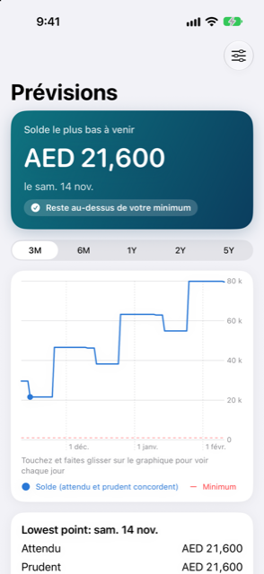

Guide › Planification
Prévision et dépense sûre
Comment Damla calcule le montant qu’il est sûr de dépenser, et comment lire le graphique.
La Prévision montre votre solde pour les jours à venir, jour après jour, à partir de ce qui figure déjà dans vos comptes. La dépense sûre est le maximum que vous pouvez dépenser aujourd’hui sans que votre solde passe sous votre minimum à aucun moment de la période à venir.

Quand l’utiliser
- Pour voir jusqu’où votre solde descend, et quand, sur la plage que vous choisissez : 3M, 6M, 1A, 2A ou 5A.
- Quand Aujourd’hui dit « Vous risquez d’être à court », pour trouver le jour où cela arrive.
- Après avoir modifié un revenu, une facture ou une date d’échéance, pour voir à quoi ressemblent les semaines maintenant.
Pas à pas
- Ouvrez la Prévision depuis le graphique sur la carte turquoise en haut de Aujourd’hui.
- Choisissez une plage avec le sélecteur en haut ; le graphique trace votre solde pour celle-ci, avec votre minimum en ligne rouge pointillée.
- Touchez et faites glisser le long du graphique pour déplacer le point. Une petite boîte affiche la date du jour, le solde et les mouvements, et la carte en dessous les liste en Argent entrant et Argent sortant avec les totaux.
- Lisez la bannière en haut : si et quand le solde passerait sous votre minimum, ou qu’il reste au-dessus de votre minimum.
- Touchez Et si en haut à droite pour essayer un changement : dépenser, recevoir, ignorer un paiement ou un plan récurrent, ou ajouter un plan de paiement en plusieurs fois. Vous voyez l’effet sur la dépense sûre et le point le plus bas. Rien n’est enregistré dans vos comptes.
Comment le nombre est calculé
- Les revenus et factures de Plan, Revenus et factures sont comptés selon leurs calendriers ; ceux que vous avez enregistrés ou ignorés ne sont pas comptés une seconde fois.
- Factures de carte : un relevé émis utilise son montant réel à sa date d’échéance. Un relevé pas encore émis utilise un mois type des dépenses de la carte - une moyenne de ses mois récents, le nombre défini dans Réglages sous Dépenses de carte attendues, ou le chiffre que vous donnez dans les Détails de la carte. Le montant réel d’un relevé émis prend le relais. Le chiffre de chaque carte est listé dans le groupe Cartes sous De quoi cette prévision est faite.
- Les plans de paiement en plusieurs fois, les paiements échelonnés, les factures annoncées par des avis et les remboursements entre personnes sont comptés à leurs dates.
- Les dépenses quotidiennes depuis vos comptes bancaires ne sont pas estimées ; votre réserve les couvre.
- La dépense sûre regarde au moins aussi loin que le réglage Anticipation, en comptant aussi votre prochain revenu dans cette période, si bien qu’un gros paiement juste après la paie fait baisser le nombre. C’est le solde le plus bas de cette période moins le minimum.
Un exemple détaillé
Un foyer inventé, le 9 novembre. Devise AED, solde minimum AED 1,000, anticipation d’au moins 30 jours.
| Ce qui compte | Valeur |
|---|---|
| Compte quotidien (banque) | AED 29,600 aujourd’hui |
| Épargne | AED 40,000, marquée hors prévision |
| Internet, mensuel le 12 | AED 350 sortant |
| Loyer, mensuel le 16 | AED 8,000 sortant |
| Salaire, mensuel le 27 | AED 25,000 entrant |
Aujourd’hui affiche : solde aujourd’hui AED 29,600, point le plus bas AED 21,250 le lun. 16 nov, dépense sûre AED 20,250 - le point le plus bas moins le minimum de AED 1,000. La fenêtre va du 9 nov au 9 déc, après le salaire du ven. 27 nov, donc ce qui arrive après la paie est compté aussi. L’épargne ne figure pas dans ces chiffres.
Solde jour après jour (ligne attendue ; la ligne prudente est identique ici, car chaque élément est fixe) :
| Date | Solde | Pourquoi |
|---|---|---|
| 9 au 11 nov | AED 29,600 | |
| 12 nov | AED 29,250 | Internet 350 |
| 16 nov | AED 21,250 | Loyer 8,000 (le point le plus bas) |
| 27 nov | AED 46,250 | Salaire 25,000 |
Limites de paiement ponctuel (un paiement, en gardant le minimum) :
| Date de paiement | Maximum que vous pourriez payer | Montant confortable |
|---|---|---|
| 10 nov, 13 nov ou 19 nov | AED 20,000 | AED 16,000 |
| 29 nov (après le salaire) | AED 36,500 | AED 29,500 |
Avant le salaire, un paiement jusqu’aux montants de la première ligne ne fait jamais passer le solde sous le minimum de AED 1,000. Après la paie, la limite est plus grande.
Bon à savoir
À voir aussi
Quelque chose n’est pas clair ou manque ? Écrivez à support@raveniq.ai en indiquant la page.